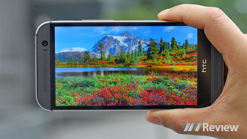

ĐÁNH GIÁ CHI TIẾT HTC ONE M8
Năm ngoái, chiếc HTC One đã nhận được nhiều đánh giá tích cực và là sản phẩm ra đời với kỳ vọng giúp hãng điện thoại Đài Loan vượt qua khó khăn. Nhưng cuối cùng thì sự quan tâm của người dùng với HTC One chưa đủ để giúp HTC tăng trưởng trở lại. Chính vì vậy, trách nhiệm nặng nề này tiếp tục được chuyển qua HTC One M8, sản phẩm được bán chính hãng tại Việt Nam từ đầu tháng Năm với giá 16,8 triệu đồng. Chiếc HTC One M8 năm nay có nhiều cải tiến theo hướng tích cực. Ngoài những nâng cấp như thường lệ về bộ vi xử lý và phần mềm mới hơn, máy có thiết kế nhiều kim loại hơn và đẹp hơn, màn hình lớn hơn, camera sau có thêm camera phụ để tăng tốc độ lấy nét và hỗ trợ tính năng lấy nét sau khi chụp, camera trước được tăng độ phân giải lên 5MP và pin lượng lớn hơn. Những thay đổi này của HTC One M8 mang lại những cải thiện như thế nào trong trải nghiệm thực tế, đặc biệt là chất lượng camera, một trong những điểm mà chiếc HTC One trước đó vẫn thua kém nhiều so với các đối thủ cạnh tranh như Samsung Galaxy S5 và iPhone 5s?